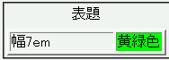

caption要素を含むテーブルでは、col要素やcolgroup要素に対して指定したスタイルがすべて無視される。
<table border="2"> <caption>表題</caption> <col style="width:7em"> <col style="background:lime"> <tr><td>幅7em</td><td>黄緑色</td></tr> </table>
| 幅7em | 黄緑色 |
1列目のセルには幅を、2列目のセルには背景色を指定しています。
WinIE6.0での表示（標準モード）
Safari1.0～1.2でこの不具合が発生するそうです。